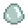

Baba
Ir a la navegación
Ir a la búsqueda
| Baba | |
|  | |
| Un pegote gelatinoso y brillante sin olor. | |
| Información | |
| Origen | Babas • Krobus • Bola de baba • Estanque de peces |
| Precio de venta | |
- Esta página informa sobre el objeto. Para el monstruo que suelta estos objetos, mira Babas.
La Baba es un botín de monstruo de las babas. Matando una baba se pueden conseguir 1-2 de baba. También se puede conseguir de las bolas de baba o comprándolas a Krobus por  10o los lunes.
10o los lunes.
Regalos
| Reacciones de Aldeanos
| |
|---|---|
| No le gusta | |
| Odia | |
Lotes
Se requieren 99 de Baba en el  Lote Aventurero en la Sala de Calderas.
Lote Aventurero en la Sala de Calderas.
Recetas
| Imagen | Nombre | Descripción | Ingredientes | Equipamiento | Tiempo | Precio de venta |
|---|---|---|---|---|---|---|
| Huevo de baba | Puede incubarse en una incubadora de babas. | Prensa de babas | Variable, depende del color |
El color resultante del huevo de baba es aleatorio, pero las más baratas son más comunes.
Fabricación
| Imagen | Nombre | Descripción | Ingredientes | Se obtiene |
|---|---|---|---|---|
| Aceitera | Produce un delicioso aceite de trufa. | |||
| Corcho ligero | Aumenta ligeramente el tamaño de tu «barra de pesca». | |||
| Incubadora de babas | Incuba huevos de baba para obtener babas. Te permite criar babas en el exterior. | |||
| Cebo silvestre (5) | Una receta única de Linus que te otorga una probabilidad de pescar dos peces al mismo tiempo. |
| ||
| Almizcle de monstruo | Rocía esto para sacar más monstruos de su escondite. |
|
| Animales y Productos | |
|---|---|
| Corral | Conejo (Lana • Pata de conejo) • Dinosaurio (Huevo de dinosaurio) • Gallina (Huevo • Huevo XXL • Huevo Marrón • Huevo Marrón XXL) • Gallina dorada (Huevo dorado)• Gallina sombría (Huevo sombrío) • Pato (Huevo de pato • Pluma de pato) |
| Establo | Avestruz (Huevo de avestruz) • Cabra (Leche de cabra • Leche de cabra XXL) • Cerdo (Trufa) • Oveja (Lana) • Vaca (Leche • Leche XXL) |
| Estanque de peces | Pescados (Huevas) |
| Criadero de babas | Babas (Baba • Bola de baba • Huevo de baba) |
| Otros | Caballo • Gato • Perro |